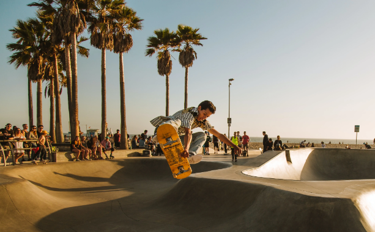

This is a normal skateboard, most beginner use this sort of board. This is also
a very affordable skateboard. This skateboard is good for beginner tricks. It has a very rubbery
feeling
TRICKS
This is a normal ohio guy doing a beginner skateboard trick. OHIO
OHIO OHIO
Don't just glide!

Skateboarding is a fun way to get around the city. Just jump on your
board and ride. However, just gliding can get pretty boring. Mix it up with some tricks.
There are several kinds of tricks such as an ollie, grind, or flip.